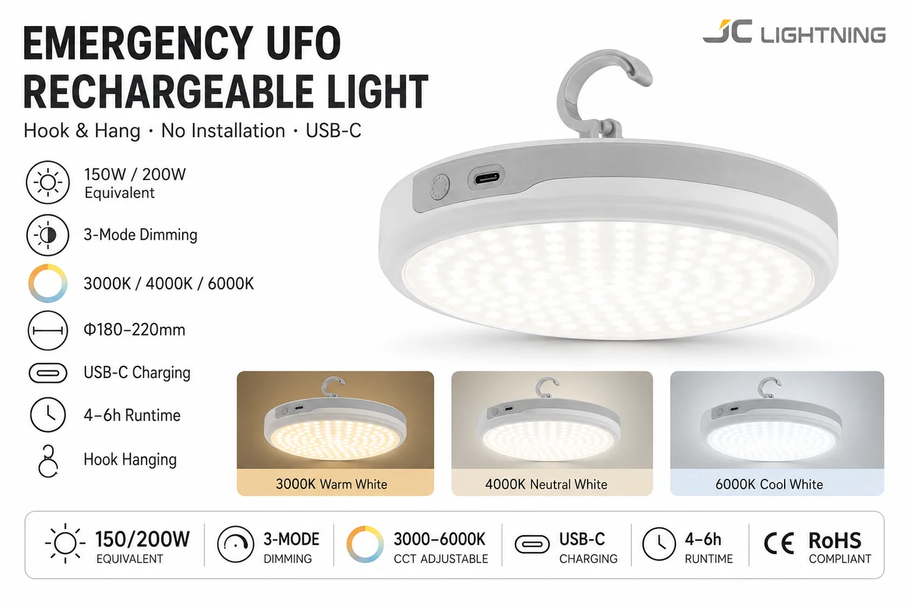

UFO 应急充电灯
用于拉闸限电与停电的高亮可充电灯——挂钩悬挂、免安装,三档调光、三种色温,USB-C 充电。

电网一断,这就是能瞬间照亮整个房间的产品。飞碟造型灯头提供高亮、均匀的照明(150/200W 级别),挂在任意挂钩上零安装,可三档调光、三种色温切换。USB-C 充电、续航 4–6 小时——是拉闸限电市场里简单又高影响力的停电 SKU。
规格参数
| 功率 | 150 / 200W 级 |
|---|---|
| 调光 | 三档 |
| 色温 | 3000K / 4000K / 6000K |
| 直径 | Φ180–220mm |
| 充电 | USB-C |
| 续航时间 | 4–6 小时 |
| 安装 | 挂钩悬挂,免安装 |
| 认证 | CE + RoHS |
为什么选它
照亮整个房间。高亮灯头在停电时提供真正的房间照明,而非昏暗备用光。
零安装。挂在任意挂钩上——人人能买,几秒安装。
三种色温。从暖到冷可切换,契合房间与买家偏好。
已认证、支持 OEM。每份报价附 CE + RoHS;可定制包装与品牌。
为这些市场而建南非、尼日利亚、拉美等易停电的家庭与小生意——即开即用、免安装的应急房间灯。